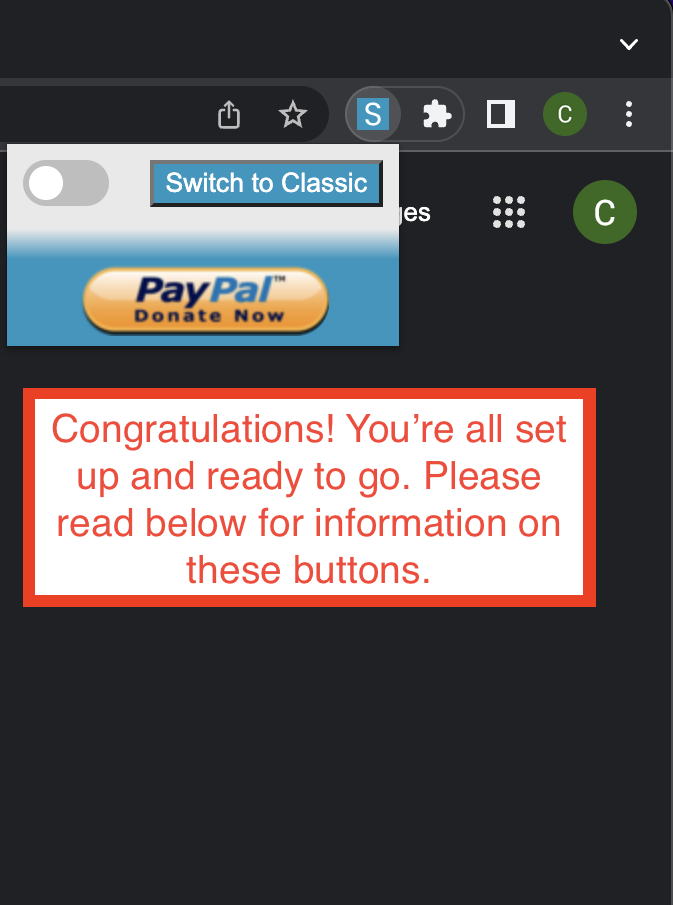

Getting Started

-
Click this button to switch to the Salesforce Classic version of the current Lightning page.
-
When the toggle button is switched off, you will have to manually click the Switch to Classic button to switch to the Classic version of the current Lightning page.
-
When the toggle button is switched on, whenever a Salesforce Lightning page is encountered it will automatically be redirected to Salesforce Classic.
-
This will take you to my Paypal tip jar. All donations are very much appreciated :)